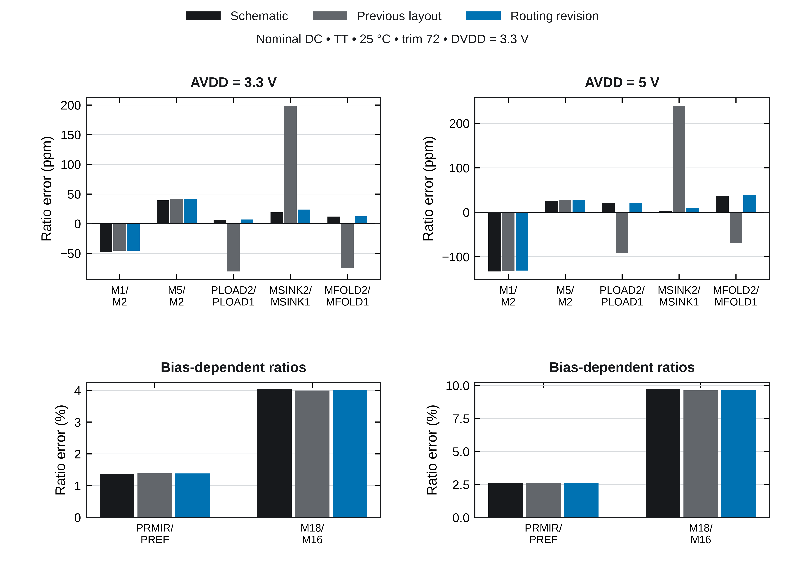

GF180MCU-D · Chipalooza #3 · routing revision · 21 October 2026
686.0 × 399.6 µm · 0.274 mm² · DRC: 0 · LVS: matched
Placement and circuit sizes are unchanged. The revised source buses and ground returns fit inside the existing core.

Three shared source buses serve M1/M2/M5, PLOAD1/PLOAD2 and MSINK1/MSINK2. Separate M5 analog and digital ground reinforcement uses redundant via arrays. R1 and the PNP-array region exclude unrelated routing. All 13 MOS dummy surrounds and all 533 device units remain intact.
Full routing review and primary references · MOS geometry audit · PNP/resistor/source-resistance audit


Minimum PSRR improves from 45.94 to 48.01 dB at 3.3 V and 48.66 to 53.17 dB at 5 V. Both layouts use ground-inclusive extraction, identical primitive-terminal anchors and the same conserved-RCC approximation. The previous GDS was rerun unchanged. Earlier published 48.10/53.37 dB values omitted ground resistance and are retained as history.
Well/substrate resistance remains lumped and coupling placement is approximate. The independent topology LVS checks and zero-resistance AC check pass. Those consistency checks do not constitute independent field-solver validation.
AC metrics · Capacitance check · Baseline provenance
The full unedited DRC deck and core LVS pass. Both extraction-topology audits pass. An independent source rebuild has zero geometry/text differences. All 360 fixed-code corner DC points complete; 2 cases retain recovered solver-fallback warnings. The expanded transient screen exceeded its 300 s per-case runtime; startup/restart is not qualified on this GDS.
Neither schematic nor layout reaches the existing 60 dB PSRR criterion. Statistical matching/trim yield, independent PEX validation, well/substrate RC, EM/IR, stability, noise, output loading and final harness integration remain open.
Verification manifest · Nominal results · Corner DC · Incomplete transient status · Historical supply cycling · Reproduction
The native dummy symbols remain explicit in Xschem and included in current full core LVS. Native-symbol LVS · Schematic views.
The original pre-layout temperature-trim chart, specification estimates and simulation instructions remain in the main README. Historical native-symbol simulation confirmation · Previous matching revision.
GDS SHA-256: a1e2b376e15501b8854acdcf7586cc31891f3a70d93550aa5144348bb2f3af9c